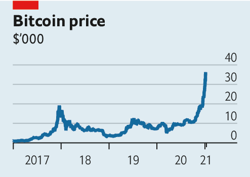

2021-01-18T13:04:58+00:00
Cryptocurrencies
【首文】加密货币
【首文】加密貨幣
If you can’t beat them
如果打不赢，就......
如果打不贏，就......
Bitcoin might yet justify a high price. But it will not up-end global finance
比特币或许仍有理由涨价。但它不会颠覆全球金融
比特幣或許仍有理由漲價。但它不會顛覆全球金融

THE FIRST surge in the price of bitcoin, to around $1,000 in 2013, minted cryptocurrency millionaires, provoked declarations of a bubble and left some early fans kicking themselves. One unlucky man in Wales searched a rubbish dump for a hard drive containing 7,500 accidentally discarded bitcoins, whose value had grown from almost nothing to $7.5m. Since then bitcoin has been on a wild ride. Fuelled by casual speculators and market manipulation, its price surged to about $19,000 in December 2017; over the next year it fell by more than four-fifths. Bitcoin’s most recent ascent has been its giddiest yet. Having tripled in three months its price is now over $35,000 and somewhere under Newport sits a computer part worth over $260m.
比特币价格在2013年首次飙升，达到1000美元左右，造就了一批加密货币百万富翁，引发了泡沫的说法，还让一些早期爱好者捶胸顿足。威尔士的一个倒霉蛋在垃圾堆里苦苦翻找无意间扔掉的硬盘，因为里面有7500个比特币，它们已从几乎分文不值升至750万美元。从那时起，比特币坐上了过山车。在投机散户和市场操纵的推动下，其价格在2017年12月飙升至约19000美元，但在接下来的一年里暴跌超过五分之四。比特币最近一轮上涨是至今最刺激的。其价格在三个月内升至原来的三倍，目前已超过3.5万美元，而被埋在威尔士纽波特城（Newport）某处的那块电脑硬盘现在已值超过2.6亿美元。
比特幣價格在2013年首次飆升，達到1000美元左右，造就了一批加密貨幣百萬富翁，引發了泡沫的說法，還讓一些早期愛好者捶胸頓足。威爾士的一個倒霉蛋在垃圾堆里苦苦翻找無意間扔掉的硬盤，因為裡面有7500個比特幣，它們已從幾乎分文不值升至750萬美元。從那時起，比特幣坐上了過山車。在投機散戶和市場操縱的推動下，其價格在2017年12月飆升至約19000美元，但在接下來的一年裡暴跌超過五分之四。比特幣最近一輪上漲是至今最刺激的。其價格在三個月內升至原來的三倍，目前已超過3.5萬美元，而被埋在威爾士紐波特城（Newport）某處的那塊電腦硬盤現在已值超過2.6億美元。
Today’s bitcoin enthusiasm is striking because basement-dwelling libertarians are not the only ones talking it up. Some of Wall Street’s finest have joined them. Larry Fink of BlackRock, the world’s largest asset manager, said in December that bitcoin could become a “global market”. Big hedge funds such as Renaissance Technologies have been punting on cryptocurrencies. Ruchir Sharma, a strategist at Morgan Stanley’s investment arm, argues that America’s mounting debts may make cryptocurrencies more appealing.
眼下这股比特币热令人瞩目，因为推波助澜的不仅仅是那些住地下室的自由意志主义者，连一些华尔街最杰出的公司也加入了其中。全球最大的资产管理公司贝莱德集团（BlackRock）的拉里·芬克（Larry Fink）在12月表示，比特币可能会成为一个“全球市场”。文艺复兴科技（Renaissance Technologies）等大型对冲基金押注加密货币已经有一段时间。摩根士丹利投资部门的策略师鲁奇·夏尔马（Ruchir Sharma）认为，美国不断累积的债务可能令加密货币更具吸引力。
眼下這股比特幣熱令人矚目，因為推波助瀾的不僅僅是那些住地下室的自由意志主義者，連一些華爾街最傑出的公司也加入了其中。全球最大的資產管理公司貝萊德集團（BlackRock）的拉里·芬克（Larry Fink）在12月表示，比特幣可能會成為一個“全球市場”。文藝復興科技（Renaissance Technologies）等大型對沖基金押注加密貨幣已經有一段時間。摩根士丹利投資部門的策略師魯奇·夏爾馬（Ruchir Sharma）認為，美國不斷累積的債務可能令加密貨幣更具吸引力。
The total value of outstanding bitcoins exceeds that of Canadian dollars, narrowly defined to include banknotes and central-bank reserves. But few of the new crypto converts think it has any chance of replacing government money—the dream of early believers. It is far too inefficient to be of much use for making payments; bitcoin is capable of processing fewer than ten transactions per second. By contrast, the firms upending consumer finance, like Alipay and Venmo, minimise friction. Were that problem solved, governments would clamp down quickly on any technology that threatened their monetary sovereignty. Regulatory resistance has already forced Facebook’s mooted digital currency, Libra, to rebrand (to “Diem”) and scale back its early ambition. Meanwhile, the competition is heating up as central banks improve payments systems and launch slick digital currencies of their own.
现在流通中的比特币总值超过了加元（仅限纸币和央行储备）。但新近转投加密货币阵营的人很少会像早期的“信徒”那样，梦想比特币会取代政府发行的法货。比特币太低效了，每秒只能处理不到十笔交易，在支付中用处不大。相比之下，支付宝和Venmo等颠覆消费金融的公司能将摩擦降到最低。假如加密货币的这个问题得到解决，各国政府会迅速行动，打击任何威胁到它们对货币的最高控制权的技术。监管阻力已迫使Facebook酝酿的数字货币Libra更名（改为“Diem”），也再不像一开始那样雄心勃勃。同时，随着各国央行改进支付系统并推出自家时髦的数字货币，竞争正在升温。
現在流通中的比特幣總值超過了加元（僅限紙幣和央行儲備）。但新近轉投加密貨幣陣營的人很少會像早期的“信徒”那樣，夢想比特幣會取代政府發行的法貨。比特幣太低效了，每秒只能處理不到十筆交易，在支付中用處不大。相比之下，支付寶和Venmo等顛覆消費金融的公司能將摩擦降到最低。假如加密貨幣的這個問題得到解決，各國政府會迅速行動，打擊任何威脅到它們對貨幣的最高控制權的技術。監管阻力已迫使Facebook醞釀的數字貨幣Libra更名（改為“Diem”），也再不像一開始那樣雄心勃勃。同時，隨着各國央行改進支付系統並推出自家時髦的數字貨幣，競爭正在升溫。
Bitcoin mania is instead rooted in the possibility that it might eventually offer a safe store of value—like gold, but more convenient (because it is easier to maintain a digital wallet than a physical vault). Then it could win a small but permanent slice of investors’ portfolios. Like bitcoin, gold pays no interest or dividend. Unlike bitcoin, gold has fundamental uses, but it is fluctuating demand from investors for the yellow metal, not jewellers and chipmakers, that drives prices. It is therefore conceivable that bitcoin’s high price could also prove self-sustaining. If bitcoin became as popular with investors as gold (measured by the market value of their positions) the price would rise to $146,000, calculates JPMorgan, a bank. Already, millennial investors appear to prefer cryptocurrencies to bullion.
这波比特币热实则植根于一种可能性：它最终会成为一种安全的价值存储工具——就像黄金，却更方便（因为数字钱包比实体金库更易于维护）。那么，它就可能会在投资者的投资组合中赢得不大但永久的份额。和比特币一样，黄金不支付利息或股息。和比特币不一样的是，黄金有一些基本用途，但推动其价格变化的是投资者而非珠宝商或芯片制造商对这种黄色金属的需求变化。由此可以想到，比特币的高价或许也可以自我维持。据摩根大通计算，假如比特币变得像黄金一样受到投资者追捧（以其持仓市值衡量），其价格将上升至14.6万美元。比起金条，千禧一代投资者似乎已经更青睐加密货币。
這波比特幣熱實則植根於一種可能性：它最終會成為一種安全的價值存儲工具——就像黃金，卻更方便（因為數字錢包比實體金庫更易於維護）。那麼，它就可能會在投資者的投資組合中贏得不大但永久的份額。和比特幣一樣，黃金不支付利息或股息。和比特幣不一樣的是，黃金有一些基本用途，但推動其價格變化的是投資者而非珠寶商或芯片製造商對這種黃色金屬的需求變化。由此可以想到，比特幣的高價或許也可以自我維持。據摩根大通計算，假如比特幣變得像黃金一樣受到投資者追捧（以其持倉市值衡量），其價格將上升至14.6萬美元。比起金條，千禧一代投資者似乎已經更青睞加密貨幣。
There are plenty of reasons to doubt that bitcoin can emulate gold. Its price is much more volatile and moves with the stockmarket, which is hardly desirable for a supposed haven. The market is illiquid and cryptocurrency trading remains a wild west in which fraud and theft are rampant, and which facilitates crimes such as selling drugs online. Investors in cryptocurrencies must tolerate a large dose of financial and reputational risk. Hedge funds, which thrive on dicey investments, may be piling in but the stolid end of Wall Street, which includes pension funds, is wary.
有很多原因让人怀疑比特币能否媲美黄金。比特币的价格波动要大得多，而且随股市的走势变化，并非理想的避险工具。其市场缺乏流动性，加密货币交易仍是一片“狂野西部”，其中欺诈和盗窃猖獗，而且为网络贩毒等犯罪活动提供了便利。加密货币的投资者必须承受大量的财务及声誉风险。依赖高风险投资的对冲基金可能会扎堆进场，但包括养老基金在内的华尔街冷静派态度谨慎。
有很多原因讓人懷疑比特幣能否媲美黃金。比特幣的價格波動要大得多，而且隨股市的走勢變化，並非理想的避險工具。其市場缺乏流動性，加密貨幣交易仍是一片“狂野西部”，其中欺詐和盜竊猖獗，而且為網絡販毒等犯罪活動提供了便利。加密貨幣的投資者必須承受大量的財務及聲譽風險。依賴高風險投資的對沖基金可能會扎堆進場，但包括養老基金在內的華爾街冷靜派態度謹慎。
Yet it would be wrong to dismiss bitcoin’s surge out of hand. Eventually, an accommodation with regulators, more liquid trading and clampdowns on criminal activity—the supposed anonymity of bitcoin is overstated—could give it a wide appeal. Bitcoin was originally sold on the promise of upending the global monetary system. Its success now hinges on finding a more modest role within it. ■
但轻率地对比特币的暴涨不以为然就错了。如果能和监管机构“和解”，提高交易的流动性，加强打击相关犯罪活动（比特币所谓的匿名性实际是被夸大了），比特币最终可能会获得广泛的吸引力。比特币最初的卖点是承诺颠覆全球货币体系。而现在，它的成功取决于它能否在这个体系之中找到一个更温和的角色。
但輕率地對比特幣的暴漲不以為然就錯了。如果能和監管機構“和解”，提高交易的流動性，加強打擊相關犯罪活動（比特幣所謂的匿名性實際是被誇大了），比特幣最終可能會獲得廣泛的吸引力。比特幣最初的賣點是承諾顛覆全球貨幣體系。而現在，它的成功取決於它能否在這個體系之中找到一個更溫和的角色。